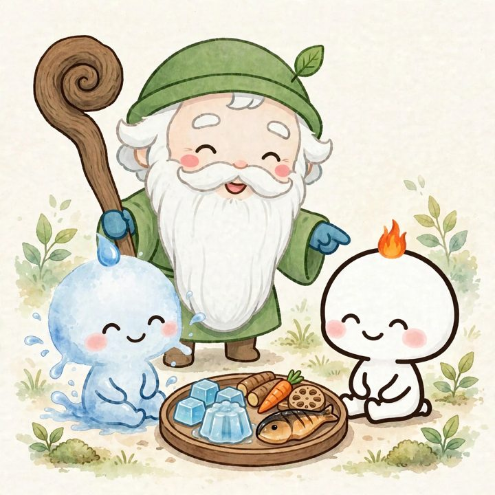
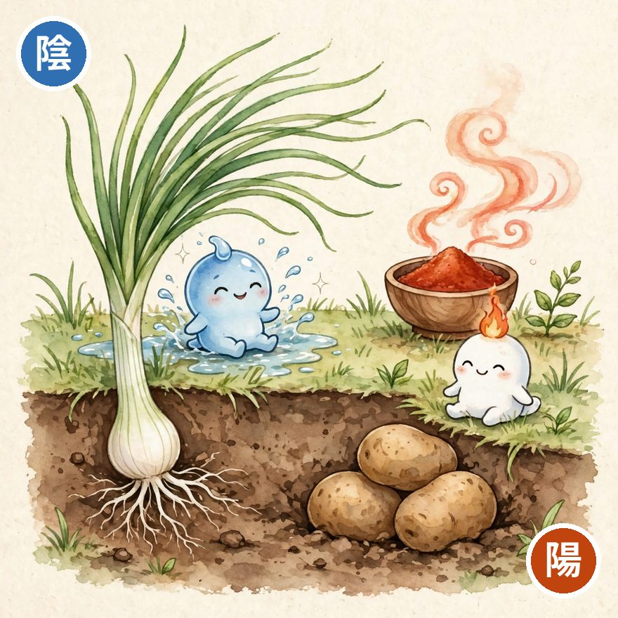
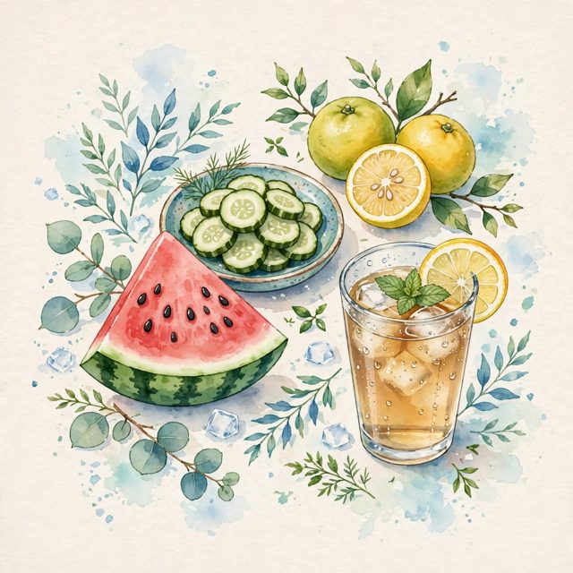
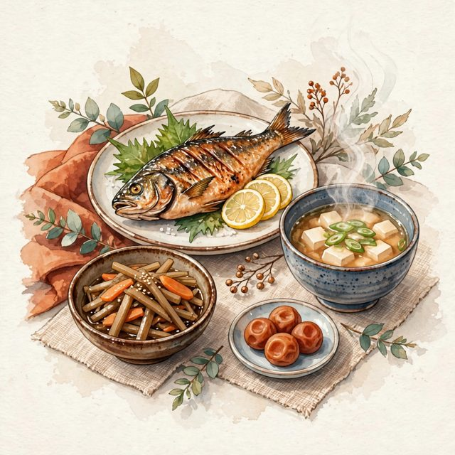

食の陰陽辞典

食べ物には「陰」と「陽」がある。
桜沢如一さんが広めた、マクロビオティックの眺め方です。
番人さんと一緒に、絵で見ていきましょうね。
陰と陽の調和をととのえて料理を作ると、
美味しく感じることが多いです。
どちらが良い・悪いではなく、真ん中を目安にする知恵です。
陰陽の基礎の基礎

陰と陽は、もともと「力の向き」を表す言葉です。
桜沢如一さんの陰陽学では、こんなふうに置きました。
陽＝求心性：中心へ集まっていく力です。植物の根のように、地面の奥、地球の中心へ向かって伸びていきます。
陰＝遠心性：外へ広がっていく力です。植物の葉や茎のように、空や宇宙へ向かって伸びていきます。
ひとつの植物の中にも、根の「陽」と、葉の「陰」が、
どちらもあるのですね。
ひとつ、注記です。東洋医学の陰陽では「陽は上へ・外へ、陰は下へ・内へ」と置くことが多く、桜沢さんの見方とは、上下の割り当てが逆に見えることがあります。本によって、同じ食べ物の陰陽が逆に書かれることもあるのですね。この辞典は、マクロビオティックの眺め方で統一していますね。
形と密度の見方

力の向きは、形や密度にも表れる、という見方があります。
ぎゅっと丸いもの＝陽：じゃがいものように、丸くまとまって密度の高いものは、中心へ集まる「陽」の姿と見ます。
ふわっと広がるもの＝陰：ネギの葉のように細長く広がるものや、スパイスの香りのように広がっていくものは、外へ広がる「陰」の姿と見ます。
同じネギの中にも、広がる葉の「陰」と、締まる根の「陽」が、
どちらもあるのですね。
3つの食卓



一物全体：皮や根も含めて、丸ごと食べる知恵です。
身土不二：その土地・その季節のものをいただく考え方です。
調和の組み合わせ
陰のものと陽のものを合わせた、
日本の食卓の実際の組み合わせです。
辞典
よくある質問
食の陰陽とは、何ですか？
食べ物を「陰」と「陽」に分けて眺める、マクロビオティックの考え方です。陰は冷やしてゆるめるもの、陽は温めて引き締めるもの、その真ん中が中庸です。どちらが良い・悪いではなく、調和を目安にする知恵として、桜沢如一さんが広めました。
陰と陽は、どうやって見分けるのですか？
桜沢如一さんの陰陽学では、中心へ集まる力（求心性）が陽、外へ広がる力（遠心性）が陰、と置きます。植物で見ると、地面の奥へ伸びる根が陽、空へ向かって伸びていく葉が陰です。この辞典の分類も、この眺め方をもとにしています。
中庸の食べ物には、どんなものがありますか？
穀物、とくに玄米が真ん中にあるとされます。陰と陽のどちらにも寄りすぎないので、毎日のごはんの中心に置く考え方です。この辞典では、玄米のほか、小松菜やブロッコリー、しいたけ、大豆なども中庸に分けています。
陰陽の調和がとれた料理とは、どんな料理ですか？
陰のものと陽のものを組み合わせた料理です。たとえば、冷奴に生姜とねぎの薬味、焼き魚に大根おろし、玄米に梅干しなど、日本の食卓に昔からある組み合わせがそうです。調和をととのえて作ると、美味しく感じることが多いといわれます。
この辞典の分類は、絶対のものですか？
いいえ。マクロビオティックの一般的な考え方をもとにした目安です。流派や本によって、少しずつ違うことがあります。眺め方のひとつとして、気軽に楽しんでくださいね。
体調に合わせた食事を知りたいときは、どうすればいいですか？
この辞典は、食べ物の眺め方を楽しむためのものです。体調に合わせた食事のことは、医師や管理栄養士など、専門家の方に相談してくださいね。
この辞典の区分は、マクロビオティックの考え方では、という目安です。
流派によって少しずつ違うことがあります。